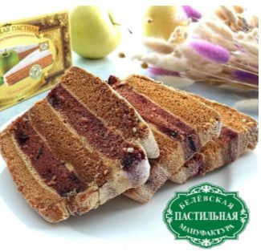

Пастилу нельзя поторопить. Яблоки пекутся, пласты сохнут, «пирог» досыхает в остывающей печи. Мы просто не мешаем.
Как это происходитВыбрать пастилу
Заварная пастила готовится гораздо быстрее. Белёвская проходит путь от яблока до кусочка в среднем за 7 дней, и сократить его нельзя без потери вкуса.
Антоновские яблоки запекаем целиком, без готового пюре.
огоньПечёное яблоко взбиваем с сахаром и яичным белком.
воздухМасса тонкими пластами сохнет в русской печи.
жарПласты складываем в «пирог», каждый слой промазываем яблочно-белковой массой.
руки«Пирог» настаивается и доходит в остывающей печи 12–24 часа.
тишина кадр из Instagram @pastila1881
кадр из Instagram @pastila1881Мастера готовят пастилу в русской печи и топят её дровами, как во времена Прохорова.из интервью руководителя производства

яблоки, сахар, яичный белок

яблоки, кедровые орехи, сахар, яичный белок

на яблочном пюре из антоновки
Концепт 5 из 7, свой. Вместо видео на первом экране – живые искры (canvas). При вёрстке сюда встаёт ролик из рилса о производстве.